CONTROL DE CALIDADValidación de requerimiento
02/09/2026
02/09/2026
Datos Maestros · Bancos · Denario Premium web y móvil · Cliente IMPORTADORA 4K · 02/09/2026
| Qué se validó | El CRUD de bancos en la web —listar, crear, editar y cambiar estatus— y que lo creado llegue hasta un cobro real, visible en la web |
| Cliente y playa | GRUPO 4K (DIESE) · Isla Coche (confirmada en runtime) |
| Usuario móvil | V.0002 — ANGEL BETANCOURT (id_user 300) |
| Banco de prueba | Código 9901 · id_bank 31 — creado, editado, deshabilitado y rehabilitado |
| Cobros de cierre | REF 2679 (banco editado · 21,00 USD) y REF 2680 (banco nuevo · 50,00 USD con excedente) — EURO REPUESTOS FIOVAL, C.A. |
| Resultado | 6 criterios PASS · 1 con observación · 0 FAIL · 1 no verificable con este cliente Se devuelve a desarrollo con 2 errores por corregir |
| # | Qué hay que corregir | Capa | ¿Del REQ de Bancos? | ¿Toca importes? |
|---|---|---|---|---|
| 1 | «Banco Emisor» aparece duplicado (la primera columna vacía) y hay una columna «Cuenta» que muestra el nombre del banco. Un banco emisor no tiene cuenta | Web | Sí — es cómo se presenta el banco del catálogo | No |
| 2 | «Monto doc. conversión» llega sin convertir: repite el monto en divisa en vez de convertirlo | Web + envío | No — apareció al revisar los mismos cobros | No |
El CRUD cumple los cuatro criterios del requerimiento. Se listó el catálogo, se crearon dos bancos desde cero, se editó el nombre de uno y se alternó su estatus en ambos sentidos, verificando cada acción en la base de datos. Los dos bancos bajaron al dispositivo y cada uno se usó como Banco Emisor de un cobro real; ambos cobros se ven en la web con el banco correcto, con sus cálculos cuadrados y su adjunto descargable.
Aun así, el requerimiento no se puede dar por cerrado. La pantalla que consume el catálogo
—el detalle del cobro en la web— presenta el banco emisor de forma incorrecta: repite la
columna Banco Emisor, deja la primera vacía y agrega una columna Cuenta que muestra el
nombre del banco. Un banco emisor no tiene cuenta: la tabla bank del propio
requerimiento solo guarda código y nombre. El dato viaja bien y se guarda bien; el problema está
en la web, en cómo lo presenta. Detalle completo en el hallazgo 1.
Revisando esos mismos cobros apareció un segundo error, este ajeno al requerimiento de Bancos: el Monto doc. conversión llega sin convertir, en los 10 de 10 cobros creados el 01 y el 02/09. Se incluye en este mismo informe —y en esta misma devolución— porque se detectó en la misma revisión y conviene que no se pierda. Detalle completo en el hallazgo 2.
| ID | Criterio | Resultado |
|---|---|---|
| C1 | El administrador ve la lista de bancos registrados para su empresa | ✅ PASS |
| C2 | Puede agregar un banco escribiendo su nombre y guardando | ✅ PASS |
| C3 | Puede editar el nombre de un banco existente | ✅ PASS |
| C4 | Puede desactivar un banco sin borrar la data dura | ✅ PASS |
| C5 | El guardado queda amarrado a la empresa del tenant | ✅ PASS |
| C6 | Lo creado alimenta los módulos transaccionales del móvil | ✅ PASS |
| C7 | El banco elegido en el móvil se ve en el cobro en la web El dato llega y es el correcto, pero la tabla lo presenta mal — ver hallazgo 1 |
⚠ CON OBSERVACIÓN |
| C8 | Al crear un banco, se crea para todas las empresas | ⚪ NO VERIFICABLE |
DIESE / GRUPO 4K).
Con un único tenant no hay forma de comprobar que el alta se replique ni que las listas no se crucen
entre empresas. Queda pendiente para un cliente multi-empresa. Lo que sí consta es que la
aplicación opera con criterio multi-empresa: al desactivar pregunta expresamente
«¿Deshabilitar este banco en todas las empresas?» (ver C4).
La vista vive en Datos Maestros → Bancos (/pages/bancos) y presenta las columnas
que pedía el requerimiento —Código · Nombre · Estado— más las acciones Detalle,
Editar y Deshabilitar/Habilitar, con ordenamiento y paginación.
Listó los 30 bancos que tenía el cliente, cifra que coincide con la tabla bank.
El requerimiento pedía validar que el nombre no llegue vacío. Se cumple: al pulsar Guardar con el formulario en blanco, la pantalla responde «Campo obligatorio.» y no guarda.
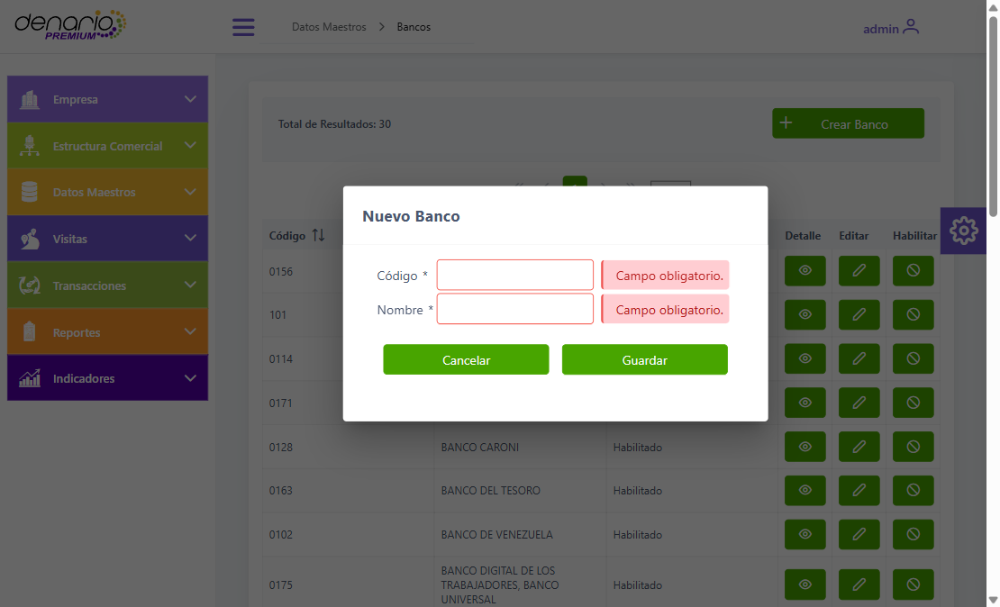
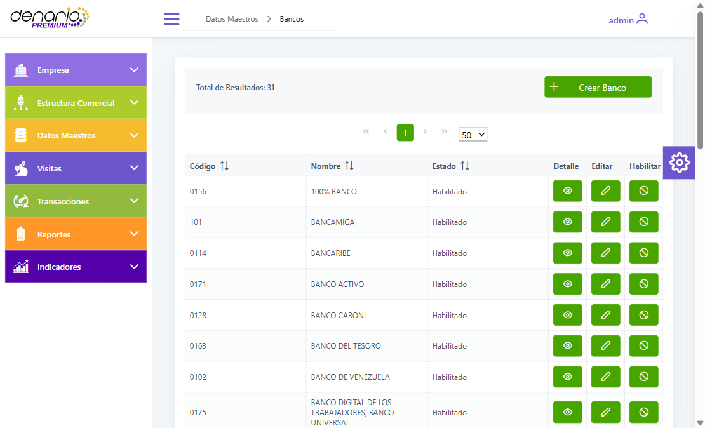
Con datos válidos, el alta quedó registrada de inmediato:
El formulario de edición carga los valores del banco y bloquea el código, dejando editable solo el nombre — coherente con el requerimiento, que pide editar el nombre.
El botón Deshabilitar abre una confirmación explícita, y su texto es informativo por sí mismo:
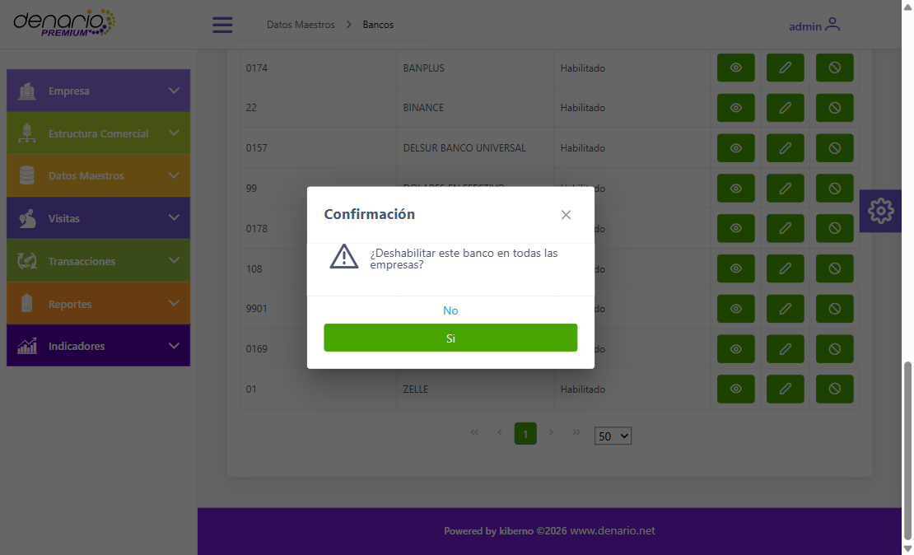
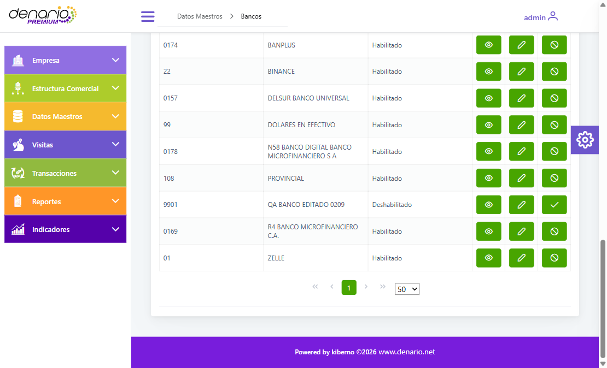
«¿Deshabilitar este banco en todas las empresas?» — la aplicación razona en términos multi-empresa aunque este tenant tenga una sola.
Es un borrado lógico, no físico, que es justo lo que pedía el criterio:
En el listado, la fila pasa a Deshabilitado y el botón cambia a Habilitar.
Es el propósito declarado del requerimiento: poblar la tabla maestra «que servirá posteriormente para alimentar otros módulos transaccionales». Se comprobó la cadena completa.
| Paso | Resultado |
|---|---|
| Antes de sincronizar | el dispositivo tenía 30 bancos |
| Sincronizar | pasó a 31 |
| El registro en el móvil | id_bank 31 · co_bank 9901 ·
QA BANCO EDITADO 0209 — con el nombre ya editado · empresa DIESE |
| En el selector | aparece en Banco Emisor del método Pago Móvil |
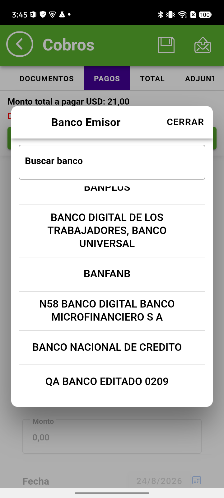
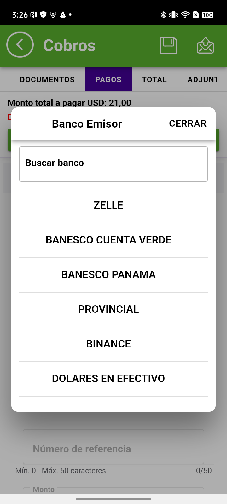
A la izquierda, QA BANCO EDITADO 0209 al final de la lista. A la derecha, el selector con buscador: lista los bancos del catálogo maestro, no cuentas del cliente.
bank aparecían en el selector antes del alta, y 31 después.
Para cerrar el criterio sin margen de duda se dio de alta un segundo banco desde la web y se buscó «QA» en el selector del móvil. Aparecen los dos: el que se editó y el que se creó. Las dos operaciones del CRUD llegan al dispositivo.
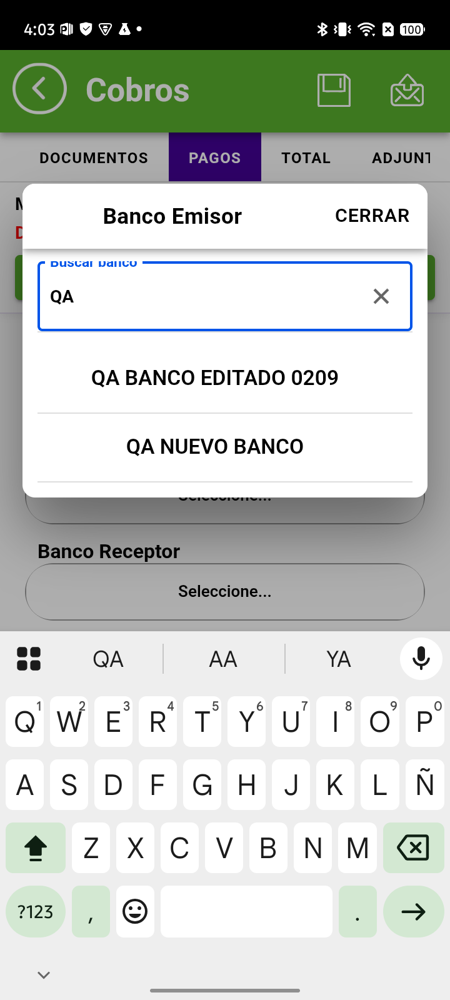
UIEl buscador del selector filtra sobre el catálogo ya sincronizado: que los dos respondan a «QA» confirma que bajaron al dispositivo con su nombre definitivo.
QA envió desde el móvil un cobro usando ese banco. El dato llega a la web y es el correcto. La presentación de esa misma tabla tiene un defecto, que se trata aparte en el hallazgo 1.
| Campo | En la web |
|---|---|
| No. de Ref. | 2679 · Estatus Por aprobar · 02/09/2026 15:42:32 |
| Cliente / Vendedor | C.0010 EURO REPUESTOS FIOVAL, C.A. — ANGEL BETANCOURT — GRUPO 4K |
| Comentario | QA-BANCOS (el comentario obligatorio del móvil) |
| Forma de pago | Pago Movil |
| Banco Emisor | QA BANCO EDITADO 0209 ← el banco creado en esta prueba |
| Banco receptor / Cuenta | BANESCO PANAMA · 201800391132 |
| Referencia · Teléfono · Documento | 5148455555 · 0414-7862514 · V-78983108 |
La cabecera ofrece Ver adjuntos y Descargar adjuntos. Los dos funcionan.
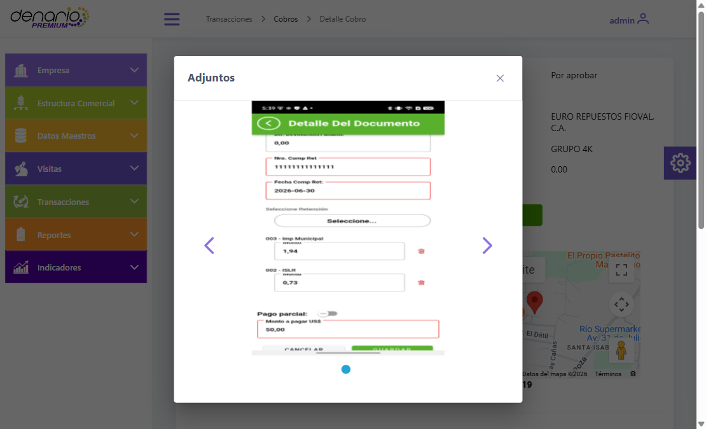
/denario/resources/images/
cobros/2679_0.jpegEl adjunto es el que se cargó desde el móvil (has_attachments = true,
nu_attachments = 1). El ZIP se descargó y se abrió para verificar que trae la imagen, no un archivo vacío.
Con un solo caso el recorrido queda probado, pero no repetido. Se creó un segundo banco desde la web —QA NUEVO BANCO, código 7777777— y se cobró con él, esta vez sobre un escenario distinto: un pago mayor al saldo del documento, para que el cobro tuviera algo que calcular.
| Campo | En la web |
|---|---|
| No. de Ref. | 2680 · Estatus Por aprobar · 02/09/2026 16:01:17 |
| Documento | FAC 00020158 · saldo 30,00 USD |
| Pago | Pago Móvil por 50,00 USD · referencia 8 · 0414-8646497 · V-4686494 |
| Banco Emisor | QA NUEVO BANCO ← el segundo banco creado hoy |
| Adjunto | cobro_2680.zip → 2680_0.jpeg, 93.205 bytes ✅ |
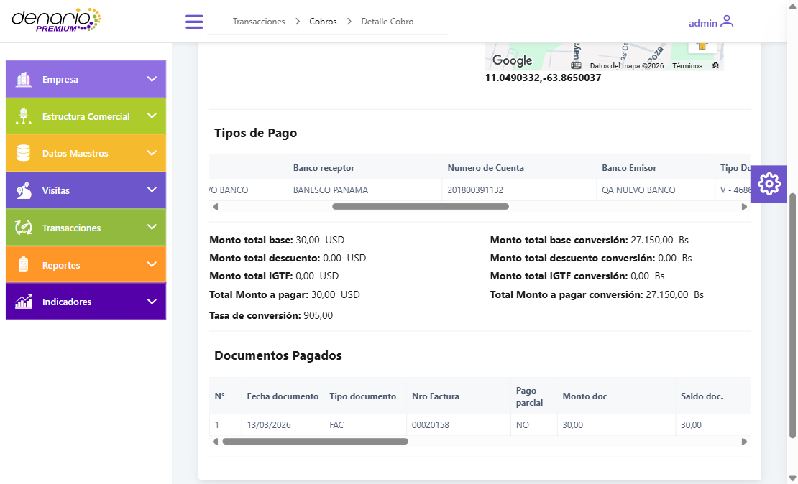
Las tres cifras derivadas —el excedente, su conversión y la diferencia cambiaria— salen correctas. Es un escenario que vale la pena dejar registrado porque ejercita la resta que el cobro simple no toca.
Aprovechando los cobros nuevos se revisó el defecto que veníamos arrastrando —los métodos de pago no se mostraban en el detalle del cobro en la web—. No reproduce.
| Cobro | Métodos que envió el móvil | Lo que muestra la web | Veredicto |
|---|---|---|---|
| REF 2679 | Pago Móvil | 1 fila: Pago Movil, con banco emisor, receptor, cuenta, referencia, teléfono y documento | ✅ OK |
| REF 2680 | Pago Móvil | 1 fila completa, con el segundo banco de prueba | ✅ OK |
| REF 2676 | Efectivo + Depósito + Transferencia | las 3 filas, cada una con su banco y su monto | ✅ OK |
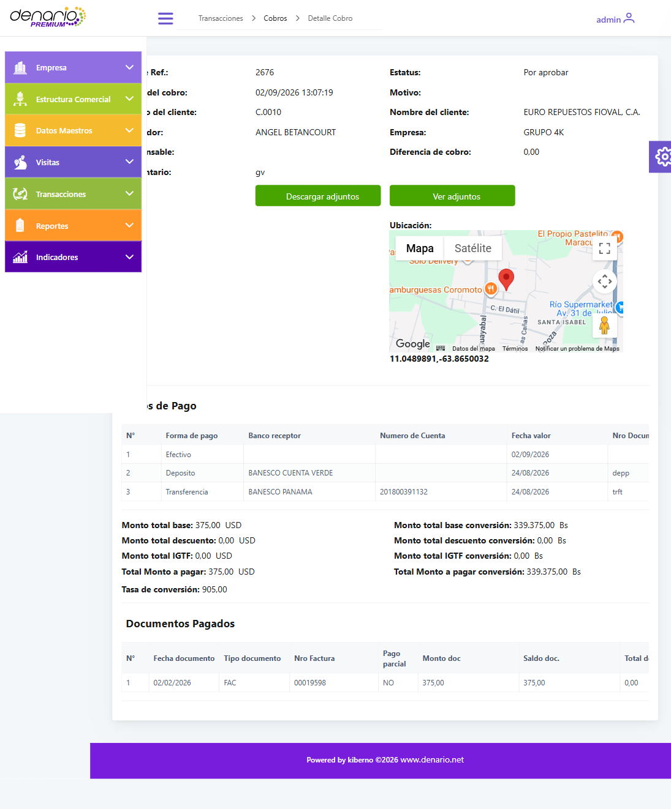
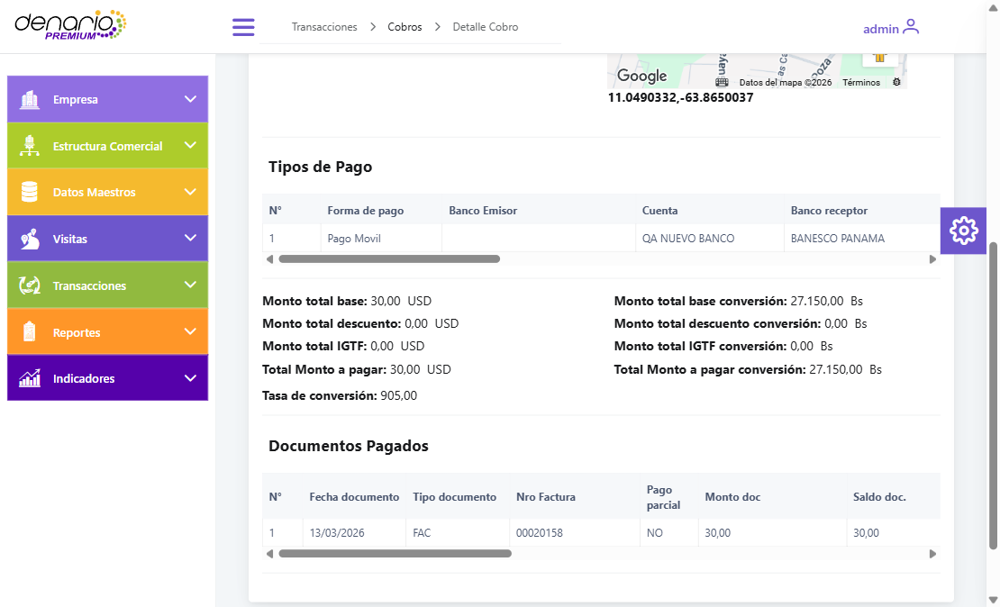
Las 14 columnas de esa tabla, en orden, y lo que trae cada una:
| # | Columna | Valor en REF 2680 | |
|---|---|---|---|
| 3 | Banco Emisor | (vacía) | ❌ |
| 4 | Cuenta | QA NUEVO BANCO — es el nombre del banco, no una cuenta | ❌ |
| 5 | Banco receptor | BANESCO PANAMA | ✅ |
| 6 | Numero de Cuenta | 201800391132 | ✅ |
| 7 | Banco Emisor (otra vez) | QA NUEVO BANCO | ✅ |
La columna «Cuenta» no está mostrando un dato equivocado: está mostrando un dato que no existe. Las tres tablas involucradas dejan clara la separación:
| Tabla | Qué guarda | En 4K |
|---|---|---|
bankel catálogo de este REQ |
co_bank + na_bank (+ empresa y conciliación).
No tiene ninguna columna de cuenta. Un banco del catálogo es código y nombre, nada más |
32 filas |
bank_accountcuentas de la EMPRESA |
Aquí sí vive nu_account. Es lo que alimenta el banco RECEPTOR del cobro |
8 filas |
client_bank_accountcuentas del CLIENTE |
Es la fuente de las columnas 3 y 4 de la tabla | 0 filas |
bank_account),Es decir: la columna «Cuenta» junto al banco emisor sobra, y la primera «Banco Emisor» duplica una columna que ya existe más adelante en la misma tabla.
El registro del pago trae el banco emisor por partida doble. La web lo lee de los dos lados, y de ahí salen las dos columnas:
collection_payment, para los dos cobros de esta prueba:Los tres últimos son campos de cuenta bancaria del cliente — una tabla que en 4K está
vacía y cuya variable, clientBankAccount, está en false.
nu_collection_payment y muestra el dato correcto.
Lo aquí reportado se midió con Pago Móvil, el único método con banco emisor alcanzable en 4K. Hay al menos dos más que también lo tienen, y conviene que la corrección los contemple:
| Método | Cómo llega al Banco Emisor | ¿Probado aquí? |
|---|---|---|
| Pago Móvil | Directo — es donde se detectó | ✅ sí |
| Cheque | También tiene Banco Emisor | ⚪ no |
| Transferencia | El emisor no se ve por defecto: requiere
clientBankAccount = true en la empresa, sincronizar config y reabrir el cobro |
⚪ no |
clientBankAccount = true, los campos
co_/nu_/na_client_bank_account pasan a tener un uso legítimo — ahí sí hay una cuenta
de cliente real que mostrar. Queda por ver si en ese caso la columna duplicada desaparece,
sigue igual o empeora. En 4K la variable está en false y la tabla tiene
0 filas, así que no se pudo probar. Se verificará en el ciclo del fix.
Ajeno al requerimiento de Bancos. Se detectó revisando los cobros de cierre y viaja en esta misma devolución para que no se pierda; si desarrollo prefiere tratarlo aparte, la incidencia está lista para abrirse como tarjeta propia.
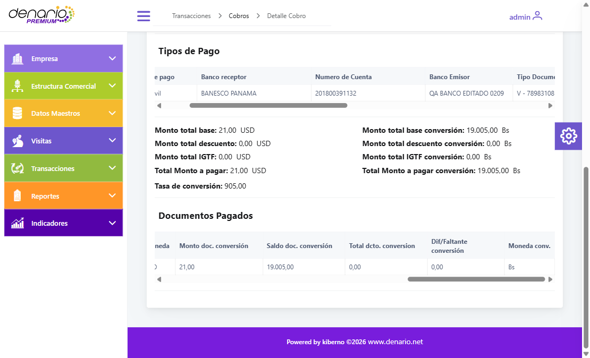
Viene así desde el móvil —no es un problema de cómo pinta la web—. El campo
nu_amount_doc_conversion llega a la nube con el valor sin convertir:
| # Ref | Fecha | Monto doc | Monto doc. conversión | Saldo doc. conversión | |
|---|---|---|---|---|---|
| 2667 | 24/08/2026 | 308,00 USD | 278.740,00 | 278.740,00 | ✅ bien |
| 2664 | 24/08/2026 | 1.168,00 USD | 1.057.040,00 | 646.622,50 | ✅ bien |
| 2671 | 01/09/2026 | 609,00 USD | 609,00 | 551.145,00 | ❌ sin convertir |
| 2676 | 02/09/2026 | 375,00 USD | 375,00 | 339.375,00 | ❌ sin convertir |
| 2679 | 02/09/2026 | 21,00 USD | 21,00 | 19.005,00 | ❌ sin convertir |
| 2680 | 02/09/2026 | 30,00 USD | 30,00 | 27.150,00 | ❌ sin convertir |
Qué NO rompe: el dinero está bien. El monto cobrado, el total a pagar, la conversión del total y el saldo del documento cuadran todos. El daño es de lectura: quien mire esa columna —o un reporte que la sume— verá el importe en divisa rotulado como bolívares.
| Acción | Web | Nube (BD) | Móvil |
|---|---|---|---|
| Listar bancos | ✅ 30 filas | ✅ 30 en bank | ✅ 30 en el selector |
| Crear | ✅ aparece | ✅ I · empresa DIESE | ✅ tras sincronizar |
| Editar | ✅ nombre nuevo | ✅ U, sin duplicar | ✅ con el nombre editado |
| Desactivar | ✅ «Deshabilitado» | ✅ D, dato intacto | — |
| Reactivar | ✅ «Habilitado» | ✅ U | — |
| Segunda alta (7777777) | ✅ creado | ✅ id_bank 32 · I | ✅ en el selector |
| Banco usado en un cobro | ⚠ el dato sí; la presentación no | ✅ collection_payment | ✅ elegido y enviado |
| Adjunto del cobro | ✅ se ve y se descarga | ✅ nu_attachments = 1 | ✅ cargado por QA |
banks del dispositivo
no tiene columna de operación — solo bajan los bancos activos. Es decir, un banco deshabilitado
desaparece del móvil en la siguiente sincronización, en vez de bajar marcado. Es coherente con
el objetivo de «que quede oculto», y conviene saberlo para no buscar una bandera que no existe.
collection_payment.nu_collection_payment,
como texto — no como referencia al banco. id_bank / na_bank de esa
misma fila son el banco receptor. Consecuencia práctica: si mañana se renombra un banco, los
cobros ya emitidos conservan el nombre con el que se emitieron.
| Caso | Motivo |
|---|---|
| Replicación a todas las empresas (C8) | 4K tiene una sola empresa. Requiere un cliente multi-empresa. |
| CRUD de cuentas bancarias de CLIENTE | La variable clientBankAccount está en false en 4K; por el propio
requerimiento ese caso solo aplica cuando está activa. |
| Banco emisor en Cheque y en Transferencia | Solo se alcanzó Pago Móvil. Transferencia exige
clientBankAccount = true para mostrar el emisor. Ambos entran en el ciclo
del fix — ver el cierre del hallazgo 1. |
| Código | Nombre final | Estado al cierre | Nube |
|---|---|---|---|
| 9901 | QA BANCO EDITADO 0209 — usado en el cobro REF 2679 | Habilitado | ✅ BD-OK |
| 7777777 | QA NUEVO BANCO — usado en el cobro REF 2680 | Habilitado | ✅ BD-OK |
Dos bancos de prueba. Conviene dejarlos deshabilitados al cerrar la validación para que no aparezcan en los selectores de los vendedores; los cobros ya emitidos conservan el nombre igual, porque viaja como texto.

req_crud_bancos_20260902